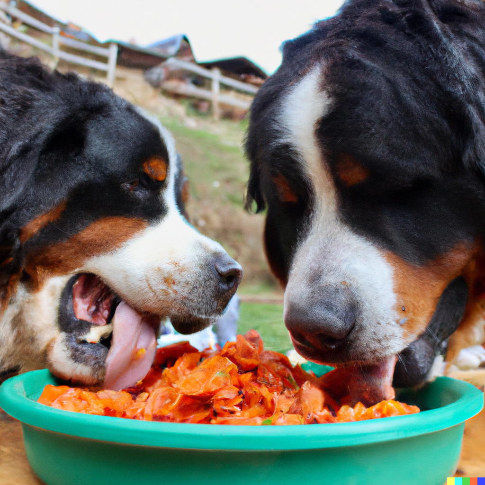
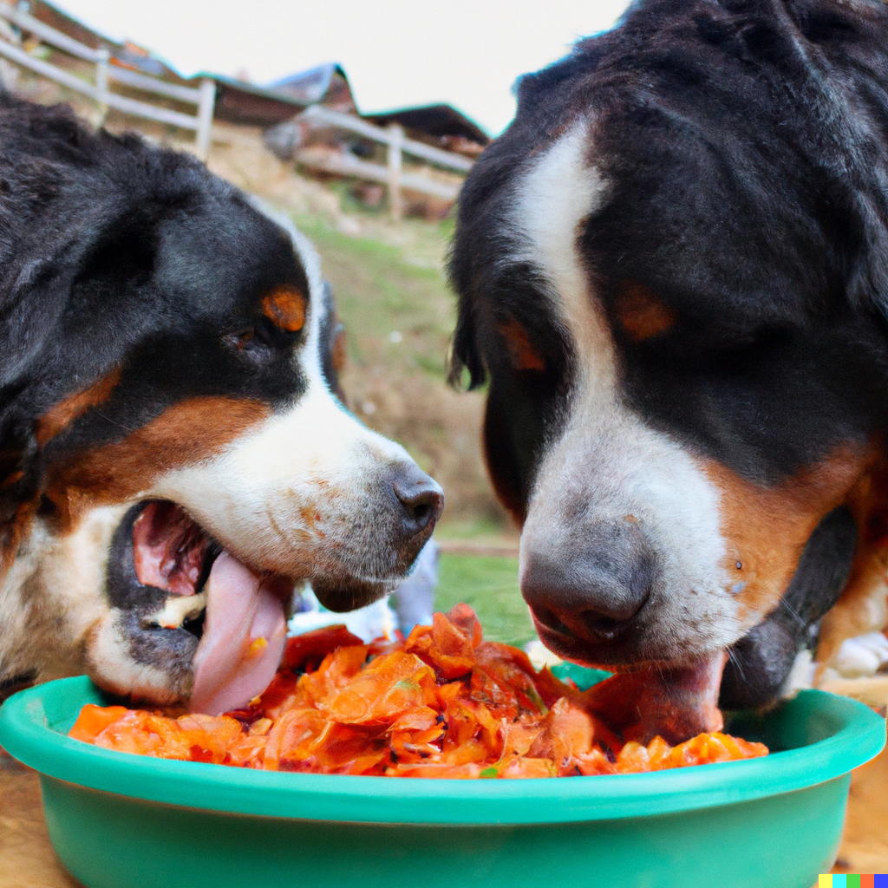

Servicios para perros
Masajes para perros
En nuestro hotel, nos preocupamos por el bienestar de su mascota y queremos asegurarnos de que disfruten de su estancia tanto como usted. Por ello, ofrecemos masajes relajantes especialmente diseñados para su amigo de cuatro patas. Nuestros terapeutas expertos en masajes caninos proporcionarán una experiencia única y placentera que dejará a su mascota rejuvenecida y contenta. Mime a su compañero con este lujoso tratamiento y vea cómo se deleitan en la comodidad y el cuidado que merecen.
Buffets libres
En el Hotel Boyeros de Berna, entendemos la importancia de deleitar a nuestros huéspedes con una experiencia culinaria única y variada. Por eso, ofrecemos distintos tipos de buffets libres que satisfacen los paladares tanto de usted como de su mascota. Nuestra selección de opciones gastronómicas incluye deliciosos platos locales e internacionales, con ingredientes frescos y de alta calidad. También nos enorgullecemos de presentar un buffet especial para perros, con opciones nutritivas y sabrosas para que su fiel amigo disfrute al máximo. Disfrute de una experiencia gastronómica inigualable en la que tanto usted como su mascota se deleiten con nuestras exquisitas opciones culinarias.
 



Actividades físicas para perros
En el Hotel Boyeros de Berna, nos complace ofrecer instalaciones excepcionales para garantizar la diversión y el entretenimiento de su perro. Contamos con piscinas caninas, circuitos de agility y zonas de recreo especialmente diseñadas para fomentar la actividad física y el disfrute de su mascota. Estas instalaciones permiten a su amigo de cuatro patas mantenerse en forma y sociable durante su estancia, mientras se divierten en un entorno seguro y estimulante.
Guardería para perros
En el Hotel Boyeros de Berna, entendemos que puede haber momentos en los que necesite dejar a su mascota por unas horas. Para su tranquilidad, ofrecemos un servicio de guardería para perros en el cual nuestro personal capacitado cuidará y entretendrá a su amigo de cuatro patas en un ambiente seguro y cariñoso. Puede disfrutar de sus actividades con la confianza de que su mascota está en buenas manos y pasando un buen rato.